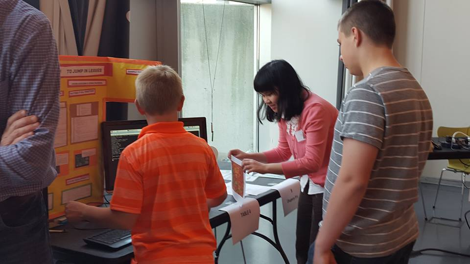

Leaf Leaper Raspberry Pi Application
First place in Illinois Tech Exchange Raspberry Pi PitchIT Student Challenge, Sensor category 2015
First place in BuildIT Student Challenge, Sensor category 2016
I love jumping in leaves, but as I grew older, I realized I had less and less time to do it. Whenever I remembered to indulge in this fine fall fun, the results were less than satisfactory. It was too cold, the leaves were damp, or there weren't enough leaves to begin with! This project uses a raspberry pi, camera module, and temperature-humidity sensor to detect and notify users of optimal leaf jumping conditions.
Github repository: https://github.com/vauduong/Leaf-leapingMy project is featured in these videos created by the Illinois Tech Exchange: